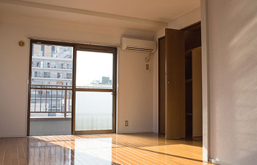
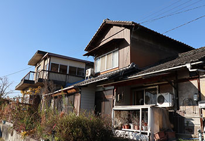

- トップ
- 相続・空き家対応
相続・空き家対応
不動産が関連する相続にはトラブルも多く、その解決には専門知識が必要です。また、その物件を空き家のまま放置すれば、困ったデメリットやリスクを被ることも。こちらでは、福津市と宗像市で不動産売却を手がけるひかり不動産が、相続・空き家に関するお悩みと、その解決方法について解説します。
相続不動産に関してこんなお悩みありませんか？
- 不動産を将来的に相続する予定だが、適切な対応が分からない
- 突然不動産を相続することになり困っている
- 相続した不動産を放置しているが、維持費ばかり負担になる
- 遠方の実家を相続したものの、使い道がない
- 遺された不動産は、現金化して公平に分配をしたい
- 兄弟姉妹で受け継ぐ不動産の分け方で話がまとまらない
Pickup! 提携司法書士・行政書士のご紹介
不動産相続は専門的な領域であり、法律の知識なども絡みます。そのため、適切な対応が分からず困惑される方も少なくありません。当社は古賀市の「司法書士松本事務所」と業務提携を行い、相続に関わるお悩み事の相談を受け付けております。相続や遺言、登記相談など、専門的な手続きに対応いたしますので、ぜひご相談ください。当社が窓口となり、リーズナブルな料金で不動産にまつわる各種サービスを提供させていただきます。
不動産相続の難しさ
両親などから財産を受け継ぐことは、親族の権利です。しかし、遺産を相続することがすべてプラスになるわけではありません。とくに、自分が住んでおらず、これから住む予定もない土地付きの家を継ぐ場合には、さまざまな問題が考えられます。
たとえば維持費です。固定資産税などはもちろん、建物のメンテナンスといった空き家管理には、ある程度の費用がかかります。もちろん、ご自身で手入れをすることもできますが、遠方にある場合などは現実的ではないでしょう。
また、そもそも不動産は現金と異なり、単純に割り切れないという特性があります。もしも相続人が複数人いるような場合は、それが争いの種になることも。こうしたリスクも含め、相続は慎重に進める必要があります。
相続対策のタイミング
相続税申告のタイミング
相続に関連する申請は、主に納税と登記が契機になります。まずは納税です。もしも相続税がかかるとなった場合は、申告し納税する必要があります。また、事前に贈与される場合も、贈与税が課されます。
次に登記。たとえば不動産を相続後に売却するなら、事前に名義変更を行わなくてはなりません。この際にも、申告を行いましょう。なお、相続税の申告は相続を開始してから10カ月以内と期限があります。期日までに、上記について確認しておくようにしましょう。
相談を考えるタイミング
相続対策の検討は、早いに越したことはありません。現在は元気であっても、いつどんなトラブルが起こるか分からないからです。たとえば認知症になってしまうと、意思決定能力がないと判断されてしまい、自身の財産についての決定権がなくなってしまいます。また、お子さんが不動産を処分しようと動いたとしても、本人の意志確認ができないため、売却もできなくなり、資産が塩漬けになってしまいます。まだ意思が明確で、体力もある内に親族間で話し合いを行い、生前贈与や遺言書、不動産の売却といった相続対策を行いましょう。
不動産相続の流れ
-
step 1 遺言書の確認
- まずは故人の遺志を確認するために、遺言書を探します。正規の手続きを踏んで作成された遺言書があれば、その内容に従い相続を行うのが基本です。なお、遺産分割協議後に遺言書が見つかったといった場合でも、基本的には遺言書の内容が優先されます。
-
step 2 相続人の確定
- 遺言書を探しつつ、同時に行いたいのが相続人の確定です。正確に相続人を把握するためには、被相続人の戸籍謄本を取り寄せる必要があります。新たな相続人が後から発生するといったことがないよう、事前にしっかり調べておきましょう。
-
step 3 財産目録の作成
- 相続人を確定したら、次に被相続人の財産を特定し、財産目録を作成します。たとえば不動産の場合だと、市区町村から届く固定資産税の納税通知書を見れば、所有が確認できます。そのほか、市区町村の役所で名寄帳の映しを取得すると、不動産の情報が一覧で手に入ります。
-
step 4 遺産分割協議
- 遺言書が遺されていなかったような場合は、相続人が集まって遺産分割協議を行います。協議で合意が得られれば、不動産をはじめとした財産の相続内容を記載した遺産分割協議書を作成します。
-
step 5 相続財産の名義変更
- 不動産などの相続財産については、その名義を被相続人から相続人へ変更する必要があります。なお、不動産の相続登記の場合は、登記事項証明書などの書類が必要になるため、準備しましょう。
-
step 6 相続税の申告・納付
- 一通りの相続が完了したら、最後に相続税の申告を行います。ここで課税となった場合は、期限までに納付をしましょう。期限が過ぎると、特例が外されたり、延滞税がかかったりする可能性があります。
相続登記に必要な手続きや書類
必要書類一覧
- 土地の相続登記の申請書類
- 相続人全員の戸籍謄本
- 相続人全員の住民票抄本
- 相続人全員の住民票謄本
- 相続人全員の印鑑証明書
- 被相続人の戸籍謄本（出生から死亡までのすべて）
- 被相続人の住民票の除票
- 不動産の固定資産評価証明書
- 不動産の全部事項証明書（法務局）
なお、遺言書での申請の場合は、上記に加えて遺言書が必要になります。一方、遺産分割協議の場合には、遺産分割協議書が必要です。
役職への手続き
必要な書類がすべて揃ったら、法務省へ提出し、登記を行います。申請先の法務局は地域によって異なりますので、事前に調べてください。手続きから約1～2 週間後に、不動産の新しい権利証が発行されます。権利書が発行されれば、不動産登記の手続きがすべて完了です。
かかる費用と税金
不動産相続の際には、「相続税」と「登録免許税」がかかります。ただし、相続財産の合計額が基礎控除額内の場合、相続税は発生しません。以下の式で、確認をしてみましょう。 週間後に、不動産の新しい権利証が発行されます。権利書が発行されれば、不動産登記の手続きがすべて完了です。
相続税の基礎控除額=3000万円＋600万円×相続人の数
ちなみに、上記は基礎控除と呼ばれるもので、多いケースで言うなら子どもが相続人の数に当たります。一方、配偶者については相続額が1億6,000万円まで控除されます。これを配偶者控除と言います。
次に、不動産を相続する際にかかる登録免許税です。これは、所有者の名義変更に伴う相続登記でかかる税金です。固定資産税評価額に0.4%をかけた金額が必要です。たとえば1,500万円の固定資産税評価額の不動産であれば、6万円という計算になります。
Pickup! よくあるトラブル
相続にトラブルはつきものです。たとえば兄弟間で遺産分割の割合を揉めたり、遺産に借金が含まれていたり。とくに、相続人同士の争いに発展する “争続”については、どれだけ仲の良かった兄弟でも発生しうる事象です。
もしも不動産の相続に関する問題がこじれ、解決が難しくなった場合には、プロに相談するのがおすすめです。それぞれの事情に合わせた相続対策の問題回避策を提示してくれます。なお、当社は相続問題に強い弁護士事務所と提携をしております。さまざまな問題解決に向けた窓口として対応いたしますので、何かあればぜひご相談ください。
空き家問題

不動産相続などで受け継いだ空き家。相続人がそこに住めれば問題はありませんが、人によってはすでにマイホームを建てていたり、遠方で暮らしていたりといった事情があり、放置せざるを得ないという状況に陥るケースも考えられます。しかし、空き家の放置にはさまざまなデメリットやリスクが伴うことを把握しておきましょう。
空き家放置のデメリット
- 景観の悪化
- 周辺の建物や通行人への被害
- 犯罪
- 住宅価値の低下
- 有効活用されないことでの機会損失
- 特定空き家への指定による固定資産税増額
上記のような事態を避けるためには、適切な解決策を講じることが求められます。
注意！特定空き家化とそのデメリット

前述した特定空き家とは、2015年5月26日施行の空家等対策特別措置法で定めらる「そのまま放置すれば倒壊等著しく保安上危険となるおそれのある状態又は著しく衛生上有害となるおそれのある状態、適切な管理が行われていないことにより著しく景観を損なっている状態、その他周辺の生活環境の保全を図るために放置することが不適切である状態にあると認められる空家等」のことです。
上記に該当してしまうと、自治体からの勧告が行われ、住宅用地の特例措置が非適用になります。この場合、条件によっては課税される固定資産税が6倍になることも。特定空き家に指定されないためには、日頃のメンテナンスや管理が必要です。
空き家問題の解決方法一覧
空き家はそのまま放置し続けると、ほとんど場合持ち主様の負担になります。そこで、この問題を解決する方法を、いくつかご紹介します。
売却する
もっともシンプルかつ効率的な方法としては、売却が挙げられます。不動産を現金という流動性のある資産に変えれば、その後維持費などで悩むこともありません。なお、空き家を売却する場合は、不動産会社への相談や、空き家バンクなどの活用がおすすめです。
管理する
「現在は住んでいないものの、将来的には地元に帰って実家に住みたい」。こうしたご要望をお持ちの方は、空き家管理サービスなどの利用がおすすめです。スタッフが定期的に空き家へ出向き、必要なお手入れを行います。とくに、遠方に住まわれている方などに最適なサービスと言えるでしょう。
賃貸に出す
相続した物件を借りたいという人を募り、賃貸物件として運用する方法です。建物は人が住まなくなることで劣化します。誰かが住んでくれれば、自然と水道や電気、ガスが使われ、劣化スピードを遅らせられます。また、家賃収入が入るため、固定資産税の納税などにも役立ちます。
その他の活用方法
ある程度広い建物であれば、リフォームを行いシェアハウスや民泊に蘇らせるという方法もあります。事業となるため他の方法に比べると持ち主様の手間は増えますが、上手くいけば大きな収益につながるでしょう。
Pickup!ひかり不動産なら相続・空き家問題もワンストップで対応します。
当社は、地元の各種士業（税理士・司法書士・行政書士・土地家屋調査士・弁護士・社会保険労務士）と密接な連携を行い、お客様の問題解決に向けたお手伝いをしております。また、また加盟しているリクシル不動産のネットワークを使い、リフォームなどにも対応できます。
近年、相続物件や空き家となると問題が多角化し、解決にはそれぞれの専門知識や能力が求められます。当社であれば、それらの問題に対して的確な解決方法を提示可能です。相続や空き屋でお困りの方は、ぜひ一度当社にお越しください。